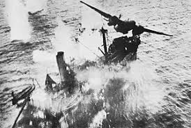

LA SEGUNDA GUERRA MUNDIAL
El Holocausto ocurrió dentro del contexto de la Segunda Guerra Mundial, que fue el
conflicto más grande y destructivo de la historia. Adolf Hitler y el régimen nazi contemplaban
un nuevo y vasto imperio de “espacio para vivir” (Lebensraum) para los alemanes, por
medio de la expulsión de las poblaciones que habitaban Europa oriental. La meta nazi
de fortalecer la “raza maestra” alemana tuvo como resultado la persecución y el asesinato
de judíos y de muchos más.
Ir a video Explicativo
Ir a imagen
Enviar E-Mail
- Sucesos importantes de cada año
- 1839
Después de asegurar la neutralidad de la Unión Soviética (por medio del Pacto Alemán-Soviético de no agresión firmado
en agosto de 1939), Alemania inició la Segunda Guerra Mundial con la invasión de Polonia el 1° de septiembre de 1939.
El 3 de septiembre, Gran Bretaña y Francia respondieron con una declaración de guerra contra Alemania. En menos de un
mes, Polonia sufrió la derrota a manos de las fuerzas alemanas y soviéticas, que procedieron a dividírsela.
- 1940
El período de relativa calma en la lucha, que siguió a la derrota de Polonia, terminó el 9 de abril de 1940, fecha en
que las fuerzas alemanas invadieron Noruega y Dinamarca. El 10 de mayo de 1940, Alemania comenzó su ataque contra Europa
Occidental al invadir los Países Bajos (Holanda, Bélgica y Luxemburgo), que habían adoptado posiciones neutrales en la
guerra, así como Francia. El 22 de junio de 1940, Francia firmó un armisticio con Alemania que contemplaba la ocupación
alemana de la mitad norte del país, y permitió el establecimiento de un régimen colaboracionista en el sur, cuya sede
estaba en la ciudad de Vichy.
Primer collage de Fotos S.G.M
- 1941
Después de asegurar la región de los Balcanes con la invasión de Yugoslavia y Grecia el 6 de abril de 1941, los alemanes
y sus aliados invadieron la Unión Soviética el 22 de junio de 1941, en una violación directa del Pacto Alemán-Soviético.
En junio y julio de 1941, los alemanes también ocuparon los estados del Báltico. Stalin, el líder soviético, se convirtió
en un importante líder del grupo aliado durante la guerra, en oposición a la Alemania nazi y a sus aliados del Eje.
Durante el verano y el otoño de 1941, las tropas alemanas se adentraron profundamente en la Unión Soviética, pero el
endurecimiento de la resistencia del Ejército Rojo evitó que los alemanes capturaran las ciudades clave de Leningrado y Moscú.
- 1942 a 1943
En mayo de 1942, la Real Fuerza Aérea británica llevó a cabo un asalto en la ciudad alemana de Colonia con mil bombarderos;
esta fue la primera batalla en territorio alemán. Durante los tres años siguientes, las fuerzas aéreas aliadas bombardearon
sistemáticamente ciudades y plantas industriales de todo el Reich; para 1945, habían reducido a escombros una buena parte de
las zonas urbanas de Alemania. A finales de 1942 y principios de 1943, las fuerzas aliadas lograron una serie de importantes
triunfos militares en el norte de África. El hecho de que las fuerzas armadas francesas no lograran impedir la ocupación de
Marruecos y Argelia suscitó la ocupación alemana de la Francia colaboracionista de Vichy el 11 de noviembre de 1942. Las
unidades militares del Eje en África, aproximadamente 150.000 soldados en total, se rindieron en mayo de 1943.

- 1944
El 6 de junio de 1944 (el Día D), como parte de una enorme operación militar, más de 150.000 soldados aliados desembarcaron
en Francia y la liberaron para finales de agosto. El 11 de septiembre de 1944, las primeras tropas estadounidenses cruzaron
hacia Alemania; un mes después, las tropas soviéticas cruzaron la frontera oriental de ese país. A mediados de diciembre,
los alemanes lanzaron un infructuoso contraataque en Bélgica y el norte de Francia, que se conoció como la Batalla de las
Ardenas. Las fuerzas aéreas aliadas atacaron plantas industriales nazis como la del campo de Auschwitz (aunque nunca atacaron
las cámaras de gas).
- 1944
Los soviéticos iniciaron una ofensiva el 12 de enero de 1945, en la que liberaron el oeste de Polonia y obligaron a Hungría
(aliada del Eje) a rendirse. A mediados de febrero de 1945, los aliados bombardearon la ciudad alemana de Dresden, donde
mataron a unos 35.000 civiles. Las tropas estadounidenses cruzaron el río Rin el 7 de marzo de 1945. El 16 de abril de 1945,
una última ofensiva soviética permitió que esas fuerzas rodearan la capital alemana de Berlín. El 30 de abril de 1945,
mientras las tropas soviéticas avanzaban peleando hacia la Cancillería del Reich, Hitler se suicidó. El 7 de mayo de 1945,
Alemania se rindió incondicionalmente ante los aliados occidentales en Reims y el 9 de mayo ante los soviéticos en Berlín.
En agosto terminó la guerra en el Pacífico, poco después de que Estados Unidos arrojara bombas atómicas sobre las ciudades
japonesas de Hiroshima y Nagasaki, donde murieron 120.000 civiles. Japón se rindió formalmente el 2 de septiembre.
- ¡Victoria en Europa!
La rendición formal de Alemania el 7 de mayo y el Día de la Victoria en Europa (día V-E) el 8
de mayo de 1945, quedaron marcados por celebraciones en toda Europa. Esta película muestra las
calles de París y de Londres llenas de gente que celebra la victoria incondicional de los Aliados
sobre la Alemania nazi y el fin de la guerra en Europa.
National Archives - Film
Segundo collage de Fotos S.G.M
|
|
|
|
 |
|
|
|
|
|
|
|
 |
|
|
 |
|
|
|
|
|
|
|
|
|
- Batallas importantes durante la guerra
- Europa
- Invación a Polonia
La invasión alemana de Polonia fue una acción militar de la Alemania nazi encaminada
a anexarse el territorio polaco. La operación técnica, conocida como «Caso Blanco» (en alemán,
Fall Weiss), se inició el 1 de septiembre de 1939 y las últimas unidades del ejército polaco se
rindieron el 6 de octubre de ese mismo año.
Más información sobre esta batalla...
- Guerra de Invierno
La guerra de Invierno estalló cuando la Unión Soviética atacó Finlandia el 30 de
noviembre de 1939, tres meses después del inicio de la Segunda Guerra Mundial. Como consecuencia,
la Unión Soviética fue expulsada de la Sociedad de Naciones el 14 de diciembre de dicho año,
acusada de perpetrar una guerra de agresión.
Más información sobre esta batalla...
- Batalla de Moscú
La batalla de Moscú es el nombre dado por los historiadores soviéticos a dos periodos
de lucha estratégicamente significativos en un corredor de 600 km del frente oriental durante
la Segunda Guerra Mundial. Estos episodios tuvieron lugar entre el 2 de octubre de 1941 y el 7
de enero de 1942.
Más información sobre esta batalla...
S.G.M a color
- Asia y el Pacifico
- Ataque a Pearl Harbor
El ataque a Pearl Harbor fue una ofensiva militar sorpresiva efectuada por la
Armada Imperial Japonesa contra la base naval de los Estados Unidos en Pearl Harbor en la
mañana del domingo 7 de diciembre de 1941.
Más información sobre esta batalla...
- Batalla del Mar del Coral
La batalla del mar del Coral fue una batalla naval entre Japón y fuerzas aliadas,
principalmente de la Armada de los Estados Unidos, librada en mayo de 1942 en el mar del Coral.
Fue una de las batallas clave del Teatro Asiático en la Segunda Guerra Mundial y significó el
primer fracaso de una ofensiva nipona.
Más información sobre esta batalla...
- Batalla de Iwo Jima
La batalla de Iwo Jima, denominada en clave Operación Detachment, es el nombre que
recibe uno de los combates más sangrientos de la Segunda Guerra Mundial, librado en la isla de
Iwo Jima entre los infantes de marina de los Estados Unidos y las fuerzas del ejército del
Imperio del Japón
Más información sobre esta batalla...
Encuesta


.jpg){kind=link}